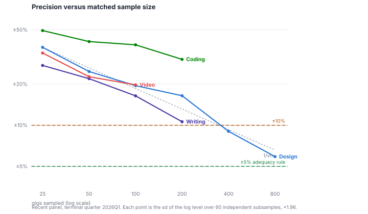
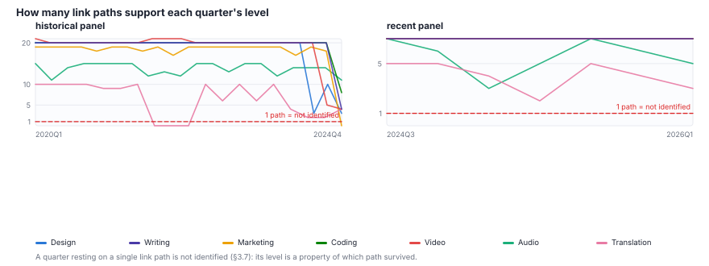
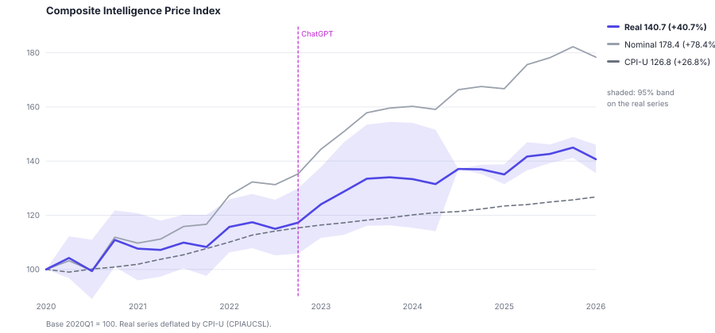
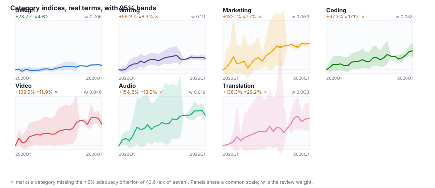
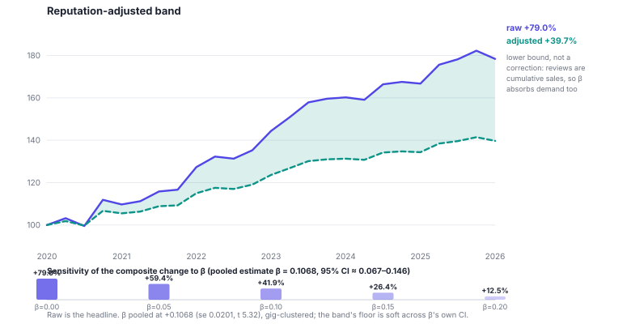

We introduce the Intelligence Price Index (IPI), a quarterly matched-model price index for cognitive-labor services, and use it to ask how much the price of that labor has moved during the generative AI era. The index is built from 37,782 archived Fiverr gig-price snapshots retrieved from the Internet Archive—a 500-seller longitudinal pilot plus a dense trailing crawl—covering seven service categories over 2020Q1–2026Q1, and estimated with GEKS-Jevons, a multilateral estimator that holds each gig fixed against itself and eliminates the chain drift that irregular archival sampling would otherwise induce.
The composite index rises +40.7% in real terms (+78.4% nominal) against CPI-U of +26.8%, with a 95% band of ±3.7%. We then measure the leading rivals to an AI account of that rise rather than arguing them away. General inflation accounts for roughly half of the nominal increase. Reputation accumulation accounts for a large further share: within a gig, price rises +7.7% per doubling of cumulative reviews, and rebuilding the index on reputation-adjusted prices gives a composite band of +39.7% to +79.0% whose floor is itself imprecise.
The pilot's negative results are part of its contribution. Six of seven categories miss the ±5% precision standard we state, so no category ranking is supported—the top three categories' intervals overlap completely. Sales and dormancy show no break at ChatGPT's release, with minimum detectable effects of ±23% to ±66%. Exit and entry are unmeasurable by crawl construction. And a benchmark-linked "price elasticity of intelligence," which earlier versions of this work reported, is a spurious regression: a linear time trend fits better than the AI score in every category, CPI-U returns comparable coefficients, and the relationship vanishes in first differences. We retract it and report the diagnostics, because the specification is an obvious one to attempt on data of this kind.
We contribute a replicable instrument, honest bounds on what pilot-scale archival data can resolve, and the specific collection-design requirements—fixed-schedule sampling that records 404s, and manifests not selected on survival—that would let a full-frame version identify what this one cannot.
How much does cognitive work cost, and how has that price moved as AI systems became capable of doing more of it? The question is asked constantly and measured rarely. A large literature estimates AI exposure—which occupations or tasks a model could in principle perform [CITE-eloundou-2023, CITE-felten-2021, CITE-webb-2020]—but exposure is a judgment about capability, not an observation of a market. Studies of freelancer earnings observe markets but at platform aggregates and with reporting lags [CITE-hui-reshef-2023, CITE-demirci-2024]. What is missing between them is the ordinary instrument an economist would reach for first: a price index.
This paper builds one. The Intelligence Price Index (IPI) is a quarterly matched-model price index for cognitive-labor services, constructed from archived gig listings on Fiverr and estimated with the multilateral methods that national statistical agencies use for elementary aggregates. The analogy to the Consumer Price Index is deliberate and it is methodological rather than rhetorical: like the CPI, the IPI tracks the same items across periods to separate price change from composition change, and like the CPI it must confront quality adjustment, item churn, and thin cells. Where the CPI measures the purchasing power of money, the IPI measures what a unit of cognitive output costs.
Our contribution is the instrument and its bounds, not a causal claim about AI. We want to state this at the outset because it is a change of ambition from where this project began, and because the reason for the change is itself a result. We set out to estimate a "price elasticity of intelligence"—a coefficient linking category prices to AI benchmark scores. We report in Section 3.9 that this specification is spurious and we retract it. What the pilot can deliver is a defensible measurement of the price path, an explicit accounting of the rival explanations for it, and quantified limits on what archival data at this scale can resolve.
The composite index rises +40.7% in real terms over 2020Q1–2026Q1 (+78.4% nominal), against CPI-U of +26.8%, with a 95% band of ±3.7%. Prices for these services rose substantially faster than consumer prices generally.
We then subtract what we can. General consumer inflation accounts for roughly half of the nominal rise. Reputation accumulation accounts for a large further share: within a gig, price rises +7.7% per doubling of cumulative reviews, and an index rebuilt on reputation-adjusted prices gives a composite band of +39.7% to +79.0%. Because reviews are cumulative sales, that adjustment absorbs demand as well as reputation, so we publish the pair as a range rather than swapping the headline—and the range's floor is itself imprecise. The residual that an AI account would have to explain is smaller than the headline and is not separately identified.
Several of our results are negative, and we treat them as findings rather than as gaps.
A measurement paper that concludes "we cannot yet identify the effect" is only worth reading if it establishes what would identify it. We think this one does. The precision-versus-sample-size relationship is measured directly and is a clean $1/\sqrt{n}$, so the requirement is concrete: roughly 900 to 1,600 matched gigs per category for ±5%, and about 7,400 for coding, the category with the least information per gig. The two crawl-design changes that would make exit and entry measurable—fixed-schedule sampling that records 404s, and manifests not selected on survival into a trailing window—are cheap to specify now and impossible to retrofit later. And the identified difference-in-differences design that fails here on power alone would, at the density the recent crawl already achieves, approach a minimum detectable effect near ±5%.
The remainder proceeds as follows. Section 2 reviews related work on AI and labor markets, online price measurement, and multilateral index methods. Section 3 describes the data, the estimator, the precision criterion, and the identification failures we found. Section 4 presents the index and the measured rival explanations. Section 5 discusses what a price index can and cannot contribute to this literature. Section 6 states limitations, several of them quantified. Section 7 concludes.
Our work sits at the intersection of three literatures: the economics of AI-driven labor market transformation, the empirical study of gig economy platforms, and the measurement of AI capabilities through benchmarks. We review each in turn, highlighting how the Intelligence Price Index builds on and extends prior contributions.
The modern study of technology-driven labor displacement begins with the task-based framework pioneered by Autor, Levy, and Murnane [CITE-autor-levy-murnane-2003], who decomposed occupations into constituent tasks and showed that computerization substitutes for routine cognitive and manual tasks while complementing non-routine analytic work. This framework was extended by Acemoglu and Restrepo [CITE-acemoglu-restrepo-2019], who formalized a model in which automation displaces labor from existing tasks while the creation of new tasks reinstates it. Their empirical work established that between 50% and 70% of changes in the U.S. wage structure over four decades can be attributed to the relative wage declines of worker groups specialized in routine tasks [CITE-acemoglu-restrepo-2022]. In a related vein, Acemoglu and Restrepo [CITE-acemoglu-restrepo-2020] demonstrated that industrial robots reduced local labor demand in exposed U.S. commuting zones.
The question of which occupations face the greatest displacement risk was brought to wide attention by Frey and Osborne [CITE-frey-osborne-2017], who estimated that 47% of U.S. employment was susceptible to computerization. Their approach--having machine learning experts label 70 occupations and training a classifier on the remaining 632--established the template of expert-rated automation exposure that subsequent work has refined. Webb [CITE-webb-2020] improved on this by linking occupational task descriptions from O*NET to patent text, constructing separate exposure measures for AI, software, and robotics. His finding that AI targets high-skilled tasks, in contrast to robots and software which target routine tasks, foreshadowed the differential impacts we observe in gig-economy pricing.
The arrival of large language models (LLMs) prompted a new wave of exposure studies. Eloundou, Manning, Mishkin, and Rock [CITE-eloundou-2023] conducted a dual annotation exercise (human experts and GPT-4) to estimate that approximately 80% of the U.S. workforce could have at least 10% of their tasks affected by LLMs, with this share rising to 47--56% when LLM-powered tools are considered. Their paper established that LLMs exhibit characteristics of a general-purpose technology (GPT) in the sense of Bresnahan and Trajtenberg [CITE-bresnahan-trajtenberg-1995]--technologies that are pervasive, improve over time, and generate complementary innovations. This GPT framing is important for our work because it implies that the economic effects of LLMs will be broad-based, cumulative, and mediated by the development of application-layer tools (e.g., GitHub Copilot, Jasper, Midjourney) that translate raw model capabilities into task-specific productivity gains. However, the methodology of Eloundou et al. relies on subjective exposure rubrics rather than observed market outcomes, and it provides a single cross-sectional snapshot rather than tracking how exposure translates into actual price or wage changes over time.
Felten, Raj, and Seamans [CITE-felten-2021] constructed the AI Occupational Exposure (AIOE) index by surveying Amazon Mechanical Turk workers about the relevance of specific AI applications to O*NET abilities. Their measure, which has become a standard in the literature, shows that managers, professionals, and office workers face the highest AI exposure while service and production workers face the least. While the AIOE provides a useful cross-occupational ranking, it does not incorporate the pace of AI capability improvement or connect exposure to observed economic outcomes.
Most recently, Massenkoff and McCrory [CITE-massenkoff-mccrory-2026] introduced the concept of "observed exposure"--measuring not just what AI could theoretically automate but what it is actually automating in practice. Using Claude conversation data, they found that actual AI adoption remains a fraction of theoretical capability, though computer programmers (75% task coverage), customer service representatives, and data entry workers show the highest observed exposure. Their finding of suggestive evidence that hiring of younger workers has slowed in exposed occupations points to the labor market adjustments our price data may capture.
An important counterpoint to the displacement narrative is the complementarity thesis. Autor [CITE-autor-2015] argued that automation has historically complemented rather than replaced most labor, because tasks rarely exist in isolation: automating one task within a job often increases the value of the remaining non-automated tasks. In the gig economy, this dynamic might manifest as rising prices for high-judgment tasks that become more valuable when routine components are automated away. Our index is consistent with that pattern but cannot establish it: Section 4.3 shows that the category-level precision needed to separate high- from low-judgment categories is not achieved at pilot scale, and the top three categories' intervals overlap completely.
The Intelligence Price Index differs from prior exposure studies in what it observes: not expert assessments of what AI could do to jobs, but prices that sellers set and revise in a competitive marketplace. An earlier version of this work went further and proposed a price elasticity of intelligence--a coefficient linking category prices to AI benchmark scores, by analogy with the price elasticity of demand [CITE-mas-colell-1995]. We retract that construct. Section 3.9 reports the diagnostics: regressing a trending price index on a trending capability score over roughly twenty quarterly observations is a spurious regression, and the specification fails a time-trend placebo, a CPI-U placebo, and a first-differenced test. What survives is the price series and an explicit account of its bounds.
Our contribution relative to this literature is therefore narrower than that original framing, and threefold. First, we supply a task-level price series where the literature offers occupational exposure scores and platform-level earnings aggregates, and we report what it can and cannot resolve against a precision criterion stated in advance. Second, we measure the leading rival explanations for the price path—general inflation and reputation accumulation—rather than acknowledging them, and report that the residual is not separately identified. Third, we build the index in the tradition of government statistical practice [CITE-bls-cpi-handbook, CITE-bls-ppi] and document the specific ways that tradition's methods degrade on sparse archival panels, which is the part of this work most likely to transfer.
A small but rapidly growing literature directly examines how generative AI affects freelance labor markets--the empirical setting of our study. Hui, Reshef, and Zhou [CITE-hui-reshef-2023] provided some of the earliest causal evidence by exploiting the staggered release of ChatGPT, DALL-E 2, and Midjourney as natural experiments. They found that writing-related freelancers on a major platform experienced a 2% decline in monthly jobs and a 5.2% decline in earnings following ChatGPT's release, while image-related workers suffered a 3.7% job decline and 9.4% income loss after image-generation models launched. Strikingly, they found no evidence that high-quality service moderated the adverse effects--suggesting that even top freelancers were not insulated from AI competition.
Demirci, Hannane, and Zhu [CITE-demirci-2024] corroborated and extended these findings using a large dataset from a global freelancing platform. They documented a 21% decrease in job postings for automation-prone tasks (primarily writing, coding, and image generation) within eight months of ChatGPT's debut, along with a 17% decrease in image-creation postings following image-generating AI releases. Importantly, they found that while the quantity of postings fell, remaining jobs shifted toward higher complexity and higher pay--consistent with a "hollowing out" of routine cognitive gig work.
Brynjolfsson, Li, and Raymond [CITE-brynjolfsson-2023] provided complementary evidence from inside firms. Studying 5,179 customer support agents with staggered access to a generative AI conversational assistant, they found a 14% average increase in productivity (issues resolved per hour), with a 34% improvement for novice and low-skilled workers and minimal impact on experienced workers. Noy and Zhang [CITE-noy-zhang-2023] found a similar pattern in a randomized experiment with professional writers: ChatGPT access reduced completion time by 40% and increased output quality, with the largest gains accruing to initially lower-performing workers. This convergent evidence of AI as a skill equalizer in the formal economy raises the question of whether similar dynamics appear in gig-economy pricing--whether, for instance, the price premium for experienced freelancers compresses as AI closes the quality gap between novice and expert output.
An important nuance in interpreting price changes is the distinction between price effects driven by cost reduction (AI lowers the cost of production, enabling lower prices at maintained quality) and those driven by quality erosion (AI-assisted work is perceived as lower quality, commanding lower prices). Both mechanisms predict falling prices, but they have different welfare implications. The gig economy setting provides partial traction on this distinction: platforms with rating systems and repeat-purchase data could in principle allow researchers to observe whether price declines coincide with quality declines as measured by buyer ratings—a question we leave to future work with richer transaction-level data. Additionally, the geographic diversity of gig platforms--where workers from high- and low-income countries compete for the same task categories [CITE-ilo-digital-platforms-2021]--introduces baseline price heterogeneity that may interact with AI displacement in ways that aggregate analyses would miss.
Beyond individual studies, platform-level data reveals structural shifts. Upwork reports that AI-related work grew 60% year-over-year in Q4 2024, with freelancers in AI-related categories earning 44% more than the platform average [CITE-upwork-2024]. Fiverr has documented a 641% increase in searches for freelancers who can "humanize AI content" [CITE-fiverr-2025], suggesting that some workers are adapting by repositioning as AI-complementary rather than AI-substitutable. These patterns suggest a bifurcated response: some gig workers respond to AI capability improvements by upskilling into higher-value tasks, while others face price compression in commoditized categories.
The broader gig economy literature provides important context for interpreting our price data. Whalley, Stocker, and Lutz [CITE-whalley-2024] trace Fiverr's evolution from a $5-per-task marketplace to a platform supporting complex, high-value services. Crucially for our study, Fiverr uses a posted-price mechanism in which sellers set and publicly display prices for standardized "gigs," making prices directly observable and comparable over time. Upwork, by contrast, uses a mix of hourly contracts and fixed-price projects where prices emerge from bilateral negotiation, introducing greater heterogeneity but also richer variation. Both platforms' pricing structures differ from formal labor markets in ways that are methodologically advantageous: prices adjust rapidly, transaction-level data is observable, and task categories are granular and standardized.
An important identification challenge in linking AI improvements to gig-economy prices is the presence of confounding factors. The post-2020 expansion of remote work increased the global supply of gig workers [CITE-upwork-freelance-forward], platform fee changes alter net prices, and macroeconomic conditions (inflation, recession fears) independently affect demand for freelance services. A subtler concern is endogeneity in the direction of AI research: if AI developers preferentially target tasks that are already commoditized on gig platforms (because training data is abundant or the economic opportunity is salient), then benchmark improvements and price declines may be jointly determined rather than causally linked. We discuss our identification strategy in Section 3, but note here that the staggered, domain-specific nature of AI capability improvements--coding benchmarks improving on a different timeline than image generation benchmarks, for example--provides a natural source of variation that helps distinguish AI-driven price effects from common macroeconomic shocks. The cross-category panel structure also allows us to include category-specific time trends that absorb pre-existing price trajectories.
Our reliance on web-archived price data connects to a growing literature using the Wayback Machine and other web archives for economic research. Prior work has used archived web pages to study price dynamics in online markets [CITE-cavallo-2017], housing market listings [CITE-piazzesi-schneider-2016], and the persistence of digital information [CITE-ainsworth-nelson-2004]. The Wayback Machine's coverage is non-random--popular pages are archived more frequently--introducing sampling considerations we discuss in Section 3 and address in Section 6 (Limitations).
A dimension largely absent from the displacement literature is the creation of new task categories in response to AI. Acemoglu and Restrepo's [CITE-acemoglu-restrepo-2019] reinstatement effect predicts that automation should generate new tasks where labor has a comparative advantage, and Autor et al. [CITE-autor-2024] document that over half of current employment is in job specialties that did not exist in 1940. In the gig economy, this dynamic is already visible: categories such as "AI prompt engineering," "AI content humanization," and "AI integration consulting" have emerged on Fiverr and Upwork since 2023 [CITE-fiverr-2025]. The IPI can track these emerging categories alongside declining ones, capturing both sides of the displacement-reinstatement dynamic in real time.
Our contribution relative to this literature is threefold. First, we move from event-study designs around specific AI releases to a continuous mapping of AI benchmark improvements to task prices. Second, we cover a broader set of task categories--including both AI-displaced and AI-created categories--than any single prior study. Third, by constructing a price index, we provide a measurement instrument that can be continuously updated as AI capabilities evolve, in the tradition of government statistical indices like the Consumer Price Index [CITE-bls-cpi-handbook] and the Producer Price Index [CITE-bls-ppi], which track price movements across baskets of goods and services over time.
We assemble category-matched AI benchmark series and release them with our data, but—following the retraction described above—we use them descriptively, to mark capability milestones on time-series figures, rather than as a regressor. This section reviews that landscape, both because the series are part of the released dataset and because the reasons benchmarks are hard to use as an economic capability measure are part of why the elasticity specification fails.
The measurement of AI capabilities through standardized benchmarks has a long history, but the pace of benchmark creation and saturation has accelerated dramatically since the advent of large language models. For coding, the SWE-bench family [CITE-jimenez-2024] evaluates models on real-world software engineering tasks drawn from GitHub issues. Top performance on SWE-bench Verified has risen from approximately 20% in mid-2024 to over 80% by early 2026, though concerns about data contamination have led to the development of SWE-bench Pro and SWE-bench Live [CITE-swebench-pro-2025]. Earlier code generation benchmarks--HumanEval [CITE-chen-2021] and MBPP [CITE-austin-2021]--are approaching saturation, with frontier models exceeding 90% pass rates.
For writing and general instruction-following, the dominant benchmarks are Chatbot Arena [CITE-zheng-2023], which uses over 6 million crowdsourced pairwise votes to generate Elo ratings, and AlpacaEval 2.0 [CITE-alpacaeval-2024], which uses automated LLM-based evaluation with length-controlled win rates that achieve 0.98 Spearman correlation with Chatbot Arena. MT-Bench [CITE-zheng-2023] provides a complementary multi-turn evaluation, though its 80-question test set limits statistical precision.
Translation benchmarks have the longest continuous history relevant to our study. The Workshop on Machine Translation (WMT) has held annual shared tasks since 2006 [CITE-wmt-2006], with BLEU scores and, more recently, COMET scores providing comparable metrics across years and language pairs. The transition from statistical machine translation to neural machine translation to LLM-based translation is well-documented through these annual evaluations, making translation one of our most data-rich categories.
For image generation, evaluation metrics include the Frechet Inception Distance (FID) [CITE-heusel-2017], CLIP scores [CITE-radford-2021], and the newer CMMD metric [CITE-jayasumana-2024]. FID, the most widely reported metric, measures distributional similarity between generated and real images, but Jayasumana et al. [CITE-jayasumana-2024] demonstrate that FID contradicts human raters for modern diffusion models due to limitations in the Inception network features it relies on. CLIP scores, which measure image-text alignment, have become a complementary standard--MS-COCO FID-30K combined with CLIP score is now a common evaluation protocol for text-to-image models. While no single centralized leaderboard tracks image generation over time in the way that Chatbot Arena tracks LLMs, the progression from GANs (FID ~10 on LSUN, 2018) through diffusion models (FID ~2 on ImageNet, 2022) to current architectures is well-documented through individual papers, and Epoch AI has begun tracking image generation benchmarks. For video and audio generation--relevant to our Video & Animation and Audio & Music categories--benchmarks are newer and more fragmented: VBench [CITE-huang-2024] for video quality and EvalCrafter [CITE-liu-2024] for text-to-video have emerged since 2023, while audio generation relies primarily on Mean Opinion Scores (MOS) and domain-specific metrics. The relative immaturity of these benchmarks is one reason we classify video and audio as Tier 3 (emerging) in our task taxonomy.
For mathematical and analytical reasoning--relevant to data analysis, accounting, and consulting tasks--MATH [CITE-hendrycks-2021] and GSM8K [CITE-cobbe-2021] provide well-tracked benchmarks. GSM8K has largely saturated at approximately 96% for frontier models, prompting the development of GSM8K-Platinum [CITE-gsm8k-platinum-2025] and harder alternatives like GPQA Diamond [CITE-rein-2023], which tests graduate-level scientific reasoning.
For legal tasks, LegalBench [CITE-guha-2024] provides 162 collaboratively curated tasks spanning issue-spotting, rule-recall, rule-application, interpretation, and rhetorical understanding. While relatively new, it represents the most comprehensive domain-specific benchmark for legal reasoning.
A critical integrative resource for our work is Epoch AI's benchmark tracking platform [CITE-epoch-benchmarks], which maintains historical scores for leading AI models across dozens of benchmarks, and the Epoch Capabilities Index (ECI) [CITE-epoch-eci], which synthesizes 37 benchmarks into a single composite capability score. The ECI reveals that AI capability improvement accelerated approximately twofold around April 2024 [CITE-epoch-acceleration-2025], a finding with direct implications for the temporal dynamics of our price index.
The use of benchmarks as proxies for economically relevant capabilities introduces important caveats that we address explicitly. First, benchmark performance may not directly translate to real-world task competence: a model scoring well on HumanEval may still struggle with the messy, context-dependent requirements of a real freelance coding project. The gap between benchmark and deployment performance is well-documented [CITE-swebench-pro-2025], motivating our preference for task-oriented benchmarks (SWE-bench over HumanEval, WMT over perplexity) that more closely resemble real freelance deliverables. Second, benchmark saturation--where frontier models cluster near ceiling performance--can obscure continued improvements in practical capability. We mitigate this by tracking harder benchmark variants (SWE-bench Pro, GSM8K-Platinum, GPQA Diamond) alongside their predecessors and using the composite ECI as a saturation-robust alternative. Third, benchmark improvements measure the capability of frontier models, but freelancers compete with the models actually deployed in accessible tools (e.g., ChatGPT, GitHub Copilot, Midjourney), which may lag the frontier. The timing and degree of this lag depends on whether frontier capabilities are available through open-source models (enabling rapid integration into tools) or only through proprietary APIs (introducing cost and access barriers). We address this by examining both frontier benchmark scores and the release dates of widely-accessible AI tools as alternative capability measures in our sensitivity analyses.
An earlier design for this project included a forecasting component: project AI capability forward, then project task prices through the estimated elasticities. That component is not in this paper, for the reason given in Section 3.9—the elasticities it would have propagated do not exist. We retain this review because the scaling-laws literature bears on what a future, adequately powered version of this index could attempt, and because its caveats explain why capability extrapolation is a weak foundation for price projection even when the elasticity is well estimated.
Kaplan et al. [CITE-kaplan-2020] established that language model performance follows power-law scaling relationships with model size, dataset size, and compute budget. Hoffmann et al. [CITE-hoffmann-2022] refined these estimates with the "Chinchilla" scaling laws, showing that compute-optimal training requires scaling model size and training data in approximately equal proportions. Their compute-optimal model, Chinchilla (70B parameters), outperformed substantially larger models across benchmarks, demonstrating that training efficiency matters as much as raw scale.
These scaling laws have practical predictive power. Epoch AI's analysis of compute trends shows that training compute has increased approximately 4.5-fold per year since 2010 [CITE-epoch-compute-trends], with the cost of compute declining roughly 40% annually [CITE-epoch-hardware-trends]. Combined with the empirical regularity that benchmark performance improves log-linearly with compute, these trends provide a basis for projecting future AI capability trajectories. Converting such a projection into a price path additionally requires a credible elasticity, which Section 3.9 shows this pilot cannot supply.
However, the scaling laws literature also provides important caveats. The relationship between compute and capability is not deterministic: algorithmic improvements, architectural innovations (e.g., the transformer, chain-of-thought reasoning), and data quality can cause discontinuous jumps. The "emergent abilities" hypothesis [CITE-wei-2022]--that capabilities appear suddenly at certain model scales--would, if true, complicate smooth extrapolation. However, Schaeffer, Miranda, and Koyejo [CITE-schaeffer-2023] have argued that apparent emergent abilities are largely artifacts of discontinuous evaluation metrics rather than genuine phase transitions in model capability, and that when measured with continuous metrics (e.g., token-level accuracy rather than exact-match accuracy), improvements appear gradual. This debate is unresolved, but for our purposes, the practical question is whether task-level price responses to AI improvements are smooth or discontinuous--an empirical question a panel of this kind could in principle address, though ours cannot: the quarterly precision needed to distinguish a smooth from a punctuated price response is well beyond what pilot-scale bands permit (Section 3.6).
Agrawal, Gans, and Goldfarb [CITE-agrawal-2018] provide the economic framework for interpreting these capability trajectories. By reconceptualizing AI as "cheap prediction," they clarify that AI's economic impact flows through its effect on the cost of prediction as an input to decisions. As prediction costs fall (i.e., as benchmark scores improve), the value of complementary human judgment may rise even as the value of routine prediction tasks falls. This prediction-judgment decomposition maps onto gig economy tasks with varying directness: data entry and simple translation are nearly pure prediction tasks, where the output is deterministic given the input; logo design and business consulting require substantial judgment about client preferences, strategic context, and aesthetic choices that current benchmarks do not measure. This framing motivated the exposure score used in the gig-level difference-in-differences of Section 4.7, which asks whether a general-purpose model can produce a gig's deliverable end to end. That design passes its parallel-trends test and is then defeated by power, so the prediction-judgment gradient remains untested here rather than confirmed or rejected. This framework also connects to the hedonic pricing literature [CITE-rosen-1974], which decomposes product prices into the implicit prices of constituent characteristics. In our setting, a gig task's price reflects both its prediction component (increasingly substitutable by AI) and its judgment component (less substitutable), and a well-powered version of this index would estimate how the hedonic weight on AI-automatable components moves as capability improves. Section 3.8 reports why a hedonic cross-section is the wrong instrument for that question on this data: the volume coefficient reverses sign between the cross-section and the within-gig comparison.
Table 1 summarizes how the IPI relates to the most relevant prior work across the three dimensions that define our approach: the type of AI measure, the type of labor market outcome, and the temporal structure.
| Study | AI Measure | Labor Market Outcome | Temporal Structure | Forecasting |
|---|---|---|---|---|
| Frey & Osborne [CITE-frey-osborne-2017] | Expert classification | Automation probability | Cross-sectional | No |
| Eloundou et al. [CITE-eloundou-2023] | Subjective rubric (human + GPT-4) | Task exposure rating | Cross-sectional | No |
| Felten et al. [CITE-felten-2021] | Survey-based AIOE index | Occupational exposure score | Cross-sectional | No |
| Webb [CITE-webb-2020] | Patent-task text overlap | Occupational exposure score | Cross-sectional | No |
| Hui et al. [CITE-hui-reshef-2023] | Binary (pre/post release) | Freelance jobs and earnings | Event study | No |
| Demirci et al. [CITE-demirci-2024] | Binary (pre/post release) | Freelance job postings | Event study | No |
| Massenkoff & McCrory [CITE-massenkoff-mccrory-2026] | Observed usage (Claude data) | Occupational task coverage | Cross-sectional | No |
| IPI (this paper) | None used as a regressor (benchmarks descriptive only; see §3.9) | Observed gig-economy prices | Longitudinal panel | No |
No prior work combines continuous AI capability measurement, observed market prices, and longitudinal tracking. The IPI contributes the price series and a measured account of what pilot-scale archival data can resolve; it does not estimate a capability-linked elasticity (Section 3.9) and does not forecast. We emphasize that our scope is deliberately limited to the gig economy, which represents a distinct and relatively small segment of the overall labor market. Gig-economy prices adjust more rapidly and transparently than formal-sector wages, which are subject to contracts, institutional rigidities, and norms [CITE-bewley-1999]. The IPI should therefore be understood as measuring the leading edge of AI-driven price adjustment in cognitive labor, not as a direct proxy for broader wage effects--though the patterns we document may foreshadow dynamics that eventually appear in formal labor markets as well.
All figures quoted in this section and in Section 4 come from a single frozen table, data/pilot/paper-numbers.md, generated by code/30-freeze-numbers.py from the published data file. No section recomputes its own figures.
Our primary data source is archived Fiverr gig pages retrieved from the Internet Archive's Wayback Machine. Fiverr is the world's largest marketplace for freelance digital services, with sellers offering standardized "gigs" at posted prices across categories including writing, graphic design, programming, video production, translation, and marketing. Three features make Fiverr well-suited for constructing a price index of cognitive labor:
The third feature requires immediate qualification, because it is weaker than it appears and it constrains everything downstream. The archive is an opportunistic crawl, not a sampling frame: pages are captured when the Internet Archive happens to capture them, at rates that vary by page popularity and by year. In our pilot manifest the consequence is severe at the early end. Distinct gigs per quarter run 9, 12, 23 and 43 across 2016Q1–Q4 and 18 in 2017Q1, against 408 in 2020Q1, and 2017Q2, 2017Q4, 2018Q1 and 2018Q2 contain no captures at all. The matched-model chain is not merely thin there but severed: the quarter pairs 2017Q1→2017Q3 and 2017Q3→2018Q3 share zero matched gigs, and only 65 of 1,066 historical panel gigs are observed both before 2017Q3 and after 2018Q3. 2018Q3 is therefore a hard floor on any matched-model estimate from this crawl, and Section 3.7 shows that even 2018Q3–2020Q1 is too fragile to publish as part of the headline series. We report 2020Q1–2026Q1.
We use two crawls. The historical crawl is a 500-seller pilot sample covering 2011–2026; the recent crawl targets the trailing window 2024Q3–2026Q1 at much higher density. They are estimated separately and spliced (Section 3.4).
How the source was chosen. Fiverr was not assumed. Before any collection code was written we tested it against three pre-registered pass/fail criteria on a 20-page probe drawn across categories and years. Coverage: at least 10 snapshots spanning at least 3 years for at least 3 categories — writing and programming each returned 50+ snapshots spanning 2012–2025. Extraction: at least 80% of probed pages yielding a price — 20 of 20 yielded a title, a seller handle and at least one price tier, via the embedded packageList JSON. Longitudinal tracking: at least 5 sellers observable at 3 or more dates — 6 were found, moving in both directions (an architecture gig $50 → $20 over four years; a web-development gig $5 → $25). Upwork and Freelancer.com were probed as fallbacks and were both worse: Upwork's archival coverage is moderate (2019–2024) with posted prices often absent from the archived page, Freelancer's is sparse. Probe artifacts are in runs/pilot-data-feasibility/.
That gate established that the source is parseable and longitudinal. It established nothing about whether it is dense enough to identify an index, which is a separate question, is answered in Sections 3.6 and 3.7, and is answered largely in the negative. A feasibility criterion cleared at 20 pages is a weak instrument and we treat it as one.
How the collection was scoped. A size estimate over the archive found roughly 2.5 million distinct Fiverr gig URLs and 4–20 TB of raw HTML — beyond what we could retrieve or store, and beyond what it would be polite to request. Rather than crawl opportunistically and stop when disk filled, we split the collection in two: download the index first, which is cheap and complete, and build the manifest offline; then download only the pages the manifest names. Every sampling decision below is therefore made against a full census of what the archive holds rather than against whatever a crawler reached first, and the sampling frame is a file we can publish and others can re-sample from.
We constructed the dataset through a multi-stage pipeline. Scripts are cited inline; each stage writes its output to disk, so the pipeline is resumable at any stage and every intermediate count below is recoverable from the released artifacts.
Stage 1: CDX index retrieval (code/01-download-cdx-index.py). We queried the Wayback Machine's CDX API once per first-letter prefix (fiverr.com/a through z), paginating each prefix to exhaustion, at a maximum of three concurrent queries with exponential backoff on failure. We retain six fields per record: urlkey, timestamp, original, statuscode, digest, length. This yields 60 million raw index entries covering the full archival history.
Stage 2: Filtering, deduplication and classification (code/02–05). A Fiverr gig is addressed as fiverr.com/, so we keep only URLs with exactly two path segments and status 200, excluding roughly sixty reserved first segments (/categories, /search, /pro, /business, /blog, and so on). This URL-shape rule is the pipeline's load-bearing assumption about what a gig is, and it is not airtight — Stage 5b below reports a family of Fiverr section pages that satisfy it and the 10.2% of observations we had to remove as a result. We then collapse to one record per (URL, day) and drop consecutive captures carrying an identical content digest, leaving 22.7 million unique (URL, month) combinations; classify each URL by keyword matching on its slug against the taxonomy in data/task-taxonomy.md; and apply the longitudinal filter — a seller qualifies if they hold at least one gig with ≥5 monthly snapshots spanning ≥2 years. This yields 48,643 qualifying sellers. Deduplication and filtering run as an external sort followed by a single streaming pass over the sorted file; the in-memory implementations we wrote first exhausted RAM at 22M records and were replaced.
Stage 3: Pilot sampling (code/06c-pilot-longitudinal.py, code/07-pilot-500.py). We sample sellers, not gigs. This is deliberate and it costs coverage: drawing gigs directly would spread the same download budget over more of the category space, but it would break the within-seller panel that the reputation and upskilling analyses of Section 3.8 require. From the 48,643 qualifying sellers we drew 5,000 uniformly at random (fixed seed), then subsampled 500 from those by the same procedure — two stages for operational reasons, the 5,000-seller manifest having been built first — and extracted every gig snapshot belonging to them, downsampled to one capture per gig per calendar month. The manifest is 26,603 monthly snapshots across 14,938 unique gigs. All results in this paper are pilot-scale; Section 6 states what a full-frame collection would resolve.
(An earlier version of this paper described this as a "stratified" sample. It is not stratified. Both draws are simple uniform random samples from the qualifying pool, seeded for reproducibility; a stratification by snapshot count was written for an earlier sampling design and did not survive into the production pipeline.)
Stage 4: HTML download (code/08-download-html.py). We request the raw capture rather than the rendered archive page — web.archive.org/web/, where the id_ suffix suppresses the Wayback toolbar and returns the bytes as originally archived — at a rate-limited 12 requests/second with exponential backoff, storing responses gzipped. Successes are appended to a checkpoint file, so an interrupted run resumes without re-requesting anything already held; transient failures (429s and timeouts) are deliberately not checkpointed, so simply re-running the downloader retries exactly those and nothing else. Of 26,603 manifest entries, 22,632 (85.1%) resolved to a distinct stored page, and all 22,632 extracted. The recent crawl retrieved 15,150 of 15,309 (99.0%).
(We previously attributed the historical crawl's 15% shortfall to 404 attrition — pages indexed but no longer served. The download log does not support that: it records 102 hard failures and no 404s at all. The bulk of the gap is manifest rows collapsing onto a gig-day file already retrieved, which is deduplication rather than loss. The 22,632 figure and everything downstream of it are unaffected; only the explanation was wrong.)
Stage 5: Price extraction (code/09-extract-prices.py). Fiverr's page markup changed twice over the window, so the extractor is written as a cascade of four methods ordered by reliability, each page falling through to the next only when the one above finds nothing:
| Method | Era | Mechanism | Share |
|---|---|---|---|
packageList JSON | 2020+ | Embedded JSON array, price in cents | 72.9% |
| Old-style JSON | Pre-2017 | JSON with price as string dollars | 15.2% |
HTML | 2018–2020 | class="price" DOM elements | 0.7% |
| Dollar fallback | All eras | $X pattern in page text | 11.2% |
Extraction succeeded on 100% of downloaded files (22,632/22,632 historical; 15,150/15,150 recent). Shares are historical-crawl figures.
Stage 5b: Excluding non-gig pages. A Fiverr gig is addressed as fiverr.com/, and the pipeline keys every observation on that two-segment path. Several of Fiverr's own section pages share the shape—/hire/ (Pro category directories) and /agencies/—where the leading segment is a reserved site section rather than a seller handle. These pages carry no packageList blob, so extraction fell through to the dollar fallback and recorded the page's budget-filter default as if it were a price. The artifact is diagnostic: 2,436 such rows sit at exactly \$500 and 330 at \$1,000, and Fiverr's change of that widget's default between 2024Q4 and 2025Q1 imposed a spurious −50% step on every affected category.
We therefore drop all observations whose leading path segment is a reserved section: 3,846 of 37,782 observations (10.2%), falling entirely within the recent crawl (the historical pilot contains none). Before applying it we audited both crawls for other families of the same kind using two independent tests—reserved leading path segment, and a page title that is not gig-shaped—which agree exactly and find no third family. The exclusion keys on the URL family rather than on the extraction method, because the dollar fallback also recovers genuine prices from pre-2017 pages where no other method applies: 2,527 of 2,531 historical dollar-fallback rows are valid gig observations, clustered at \$5 because that was Fiverr's original price floor. Section 4.6 reports the effect on the index; it is large.
Stage 6: Deduplication to unique gigs. Collapsing to unique (seller, slug) pairs with at least one valid price extraction retains 1,908 unique gigs across the 500 sellers.
Stage 7: Service item clustering (code/10-cluster-items.py). To construct CPI-style "items" (comparable service bundles) we clustered the 1,908 gigs into 150 service items by TF-IDF vectorization of cleaned titles with agglomerative clustering (cosine distance, average linkage). Examples: "logo design" (73 gigs), "WordPress website" (62), "voice narration" (47). Silhouette at k=150 was 0.114—low, and we use the clustering only for category assignment and descriptive tables, not for the index itself, which matches gigs to themselves.
Stage 8: Panel construction. We collapse multiple within-quarter snapshots to the gig-quarter median, apply a price guard (0 < p ≤ \$10,000), and retain gigs observed in at least two quarters. This yields 1,066 historical panel gigs and 2,908 recent panel gigs.
The full pipeline: 60M raw CDX entries → 22.7M deduplicated → 48,643 qualifying sellers → 500 sampled → 26,603 manifest snapshots → 22,632 downloaded → 1,908 unique gigs with prices → 1,066 historical panel gigs; separately, 15,309 recent manifest snapshots → 15,150 downloaded → 2,908 recent panel gigs.
How the collection changed. The pipeline above is the collection as it now stands, not as it was first built. It was revised five times, and because each revision was forced by something the data revealed rather than chosen in advance, the sequence is itself evidence about what archival price collection costs. We report it in full.
| # | When | Change | What forced it |
|---|---|---|---|
| 1 | Mar 2026 | Sampling rule: sellers stratified by capture count → sellers qualifying on longitudinal depth, then drawn uniformly | Stratifying on capture count selects on the archive's crawl intensity, not on panel usefulness |
| 2 | Jun 2026 | Second crawl added, anchored at 2024Q3 | The historical pilot goes sparse after 2024Q4 and cannot support a trailing index |
| 3 | Jul–Aug 2026 | Request rate reduced from 20/s to 10/s | The 20/s run failed 45% of attempts; 10/s fails none at the same sustained throughput |
| 4 | Aug 2026 | Storage moved to gzip | Measured 5.0× on this corpus; it is the difference between 93 GB and 17.6 GB |
| 5 | Aug 2026 | Non-gig section pages excluded (Stage 5b) | A parsing defect that had put a false −50% step into every category |
Three of these deserve more than a table row.
The second crawl, and why the paper has a splice. The original design was one collection: 500 sellers, whole history. It cannot measure the recent period, because sellers selected for long histories are precisely those whose captures thin out at the trailing edge. So the recent crawl was built on a different rule — anchor at 2024Q3, require a capture in the trailing window — giving 15,309 snapshots over 3,589 gigs at far higher density than the historical pilot achieves anywhere. The two panels are not a single sample and we do not treat them as one: they are estimated separately and spliced (Section 3.4), and nearly every asymmetry in this paper's results, including which categories are identified at all (Section 3.7), traces to the fact that one crawl was selected for depth and the other for density.
The rate lesson, which cost us nothing but was luck. The recent crawl ran at 20 concurrent requests at 20/second and logged 12,336 transient failures against 15,150 successes — a 45% per-attempt failure rate, absorbed only because failures are un-checkpointed and a re-run retries them. A later pilot at 10 concurrent and 10/second logged zero failures at the same sustained throughput of 5.71 pages/second. The faster setting bought nothing and merely converted successes into retries. Across both crawls' 38,000-odd logged responses, exactly 3 were 403s, so we have no evidence of having been blocked — but the correct reading is that we were running well past the point of diminishing returns and did not know it until it was measured.
The exclusion that retracted a finding. Stage 5b is the only revision that changed a published result. Fiverr section pages satisfying the two-segment URL rule had their budget-filter default extracted as a price; when Fiverr changed that default between 2024Q4 and 2025Q1, it imposed a spurious −50% step. An earlier version of this paper reported that step as a real 2025 reversal in the price of cognitive labor. It was a parsing artifact, it is retracted, and Section 4.6 reports the full before-and-after rather than quietly restating the corrected numbers.
What we now know the collection cannot fix. Three limits are properties of the archive and no larger crawl reaches them. Exit is unmeasurable: streaming all 60M CDX records for the recent window's gigs across 509,339 captures returns n_404 = 0 — the archive stops re-requesting a delisted URL rather than recording its death, so a takedown and a lapse in crawling are indistinguishable, and only a live forward crawl on a fixed schedule could separate them. The trailing edge is closed: status-200 captures fall from 280,779 in September 2024 to 66 in March 2026, and direct probes for later quarters return almost exclusively 403, so re-harvesting the index recovers nothing. The chain is severed before 2018Q3: measured over the whole index rather than a sample, adjacent quarter pairs hold 5 matched gigs at 2017Q1→Q2 and 1 at 2017Q3→Q4, against 8,084 at 2018Q3→Q4. Section 3.1's floor is imposed by the archive, not chosen by us.
Two enlarged collections are in flight and contribute nothing to this paper. Censusing the existing index showed the binding constraint was never the archive but our own selection rule: the recent window holds 91,849 distinct gigs where the shipped panel uses 2,930 (3.2%), and the full history holds 786,717, of which the historical pilot uses 0.24%. Two collections are therefore running — a no-survivor re-selection of the recent window (25,051 gigs) and a historical crawl quota-sampled on (category, adjacent quarter pair) rather than on gigs, covering 2018Q3–2026Q1 at 41,235 gigs. Both write to separate files. Every number in this paper comes from the frozen table of the original two crawls, and Section 6 states what the enlarged panels are expected to resolve — with one ceiling they will not: coding requires roughly 7,400 matched gigs per pair and the entire index supplies at most 6,142.
A caution about all of these counts. Panel gigs are not the quantity that governs precision. A matched-model index is identified by the gigs shared between pairs of quarters, and the two diverge by orders of magnitude in the historical panel. Section 3.6 reports matched gigs per bilateral, which is the number that binds, and we use it wherever this paper makes a claim about sample size.
We classify gigs into seven service categories—writing, coding, design, translation, video, audio, marketing—by keyword matching on gig descriptions and cluster labels for the historical crawl, and from the crawl manifest for the recent crawl, using an identical category map. Two further categories present in earlier drafts of this work, data entry and data analysis, are excluded: both are too thin to estimate (46 and 38 panel gigs) and data entry is explicitly dropped from the recent crawl for that reason, so neither has a post-2024 segment.
Weights are computed from maximum observed review counts per category, a proxy for transaction volume, normalized to sum to one—analogous to CPI expenditure weights. The panel and weights are:
| Category | Recent panel gigs | Weight |
|---|---|---|
| Design | 1,466 | 0.706 |
| Writing | 368 | 0.111 |
| Marketing | 294 | 0.063 |
| Coding | 462 | 0.053 |
| Video | 235 | 0.046 |
| Audio | 55 | 0.019 |
| Translation | 28 | 0.003 |
Design's weight of 0.706 is the single most consequential feature of the composite and we flag it here rather than in a footnote: the composite is, to a first approximation, a design index with six minority components. Section 3.6 shows this is why the composite meets our precision standard when six of seven categories do not, and Section 3.7 shows it is also why the composite is robust to estimator choices that move the categories substantially. Readers should not treat the composite as a summary of the seven categories' typical behaviour; the categories are reported individually for that purpose.
We construct the IPI as a matched-model index, following the approach the Bureau of Labor Statistics uses for CPI items where direct quality adjustment is difficult [CITE-bls-handbook-2018]: the same gig is compared to itself across periods, so the gig's own price level—and with it its unobserved quality, seller identity, and task specificity—cancels.
Why not a chained index. The natural elementary aggregate is a chained Jevons index: within each category, take the geometric mean of within-gig price relatives between consecutive observed quarters and multiply the links together. We do not report one, for a reason specific to archival data. Because Wayback captures are irregular, a gig is frequently observed in quarter t and not again until t+k; 24–35% of within-gig links in our panel span more than one quarter, with a longest span of 35 quarters. A chained index that keys relatives on the destination quarter books that entire multi-quarter change as a single-quarter change, and then applies it on top of the growth already contributed by gigs that were observed in between. The errors do not cancel—they compound multiplicatively along the chain, the phenomenon known as chain drift [CITE-ivancic-diewert-fox-2011].
In our data the divergence is first-order: the chained composite rises +283.0% over 2020Q1–2026Q1 against +78.4% for the drift-free estimate. We deliberately do not present that gap as a measurement of chain drift, because it is not one. Decomposing it on the production panel—separating the gap-spanning defect from genuine drift by re-estimating with links restricted to adjacent quarters—the defect's share of the total log gap ranges from 7% (audio) to 802% (translation), exceeding 100% wherever the residual runs the other way. And in two categories it does: with gap-spanning links removed, the chained level lands below GEKS (coding 273.7 vs 312.8; translation 130.4 vs 227.8). Across the seven categories the chained index diverges from GEKS by −43% to +93% with no consistent sign. The honest statement is that a chained index on irregularly-archived data is unstable in both directions relative to a multilateral one, which is an argument for the multilateral estimator rather than a quantity we can report as drift.
The estimator. For each ordered pair of quarters $(s,t)$ we form the direct bilateral Jevons comparison over the gigs matched in both,
$$P_{s,t} = \exp\left( \frac{1}{|S_{c,s,t}|} \sum_{i \in S_{c,s,t}} \ln \frac{p_{i,t}}{p_{i,s}} \right),$$
and make these bilaterals transitive by averaging the routes through every link quarter $\ell$:
$$\ln I^c_t = \frac{1}{|L_{c,t}|} \sum_{\ell \in L_{c,t}} \left( \ln P_{0,\ell} + \ln P_{\ell,t} \right),$$
with $0$ the base quarter and $L_{c,t}$ the set of link quarters for which both legs are populated. This is GEKS-Jevons, introduced by Ivancic, Diewert and Fox [CITE-ivancic-diewert-fox-2011] precisely to eliminate chain drift in high-frequency scanner data. Because each gig's price level cancels inside the ratio, gigs at very different price points are pooled with no level term to estimate; and because there is no chain, there is nothing along which error can accumulate.
GEKS is the appropriate multilateral choice here: we observe posted prices but no quantities or expenditure shares at the gig-quarter level, which rules out GEKS-Törnqvist and Geary–Khamis and leaves the unweighted Jevons bilateral that the ILO CPI Manual recommends for elementary aggregates when quantity information is unavailable [CITE-ilo-cpi-manual-2004]. We use full-window rather than rolling-window estimation [CITE-krsinich-2016] because this is a retrospective research index over a fixed window with no published history to revise.
Estimation choices. A quarter must contain at least 3 distinct gigs to receive an estimate; a gig must be observed in at least 2 quarters; and a bilateral $P_{s,t}$ must rest on at least 3 matched gigs (MIN_MATCH = 3) to be admitted. That last threshold is usually defended as buying precision at the cost of coverage. We tested the trade-off across eight values of MIN_MATCH and it does not exist in that form. In the five dense categories precision is flat to within 0.2 percentage points across MIN_MATCH = 1…10; in the thin ones, raising it makes precision strictly worse (audio's terminal band runs ±11.3% at 1, ±16.0% at 3, ±30.3% at 5, ±34.1% at 6). The mechanism is that MIN_MATCH does not add matched gigs to a comparison—it deletes comparisons, shrinking the support of the average in the display above. We keep MIN_MATCH = 3 because lowering it to 1 would let a bilateral rest on a single gig for a gain confined to the two thinnest categories, and the headline composite is robust across the range in any case (+76.4% to +78.4% for MIN_MATCH = 1…6). The thin-category problem is real, but it is a sample-adequacy problem (Section 3.6), not a threshold problem.
Splicing the two crawls. The two panels are estimated separately and spliced at their earliest shared quarter, 2024Q3, with the composite re-based to 2020Q1 = 100. The composite aggregates category indices as a weighted geometric mean, $\text{IPI}_t = \exp\left(\sum_c w_c \ln I^c_t \big/ \sum_c w_c\right)$.
Comparison with the imputation alternative. The natural regression alternative, a time-product-dummy (two-way fixed effects) specification $\ln p_{i,t} = \alpha_i + \delta_t + \varepsilon_{i,t}$, is also drift-free and yields a composite change of +89.6% ($r = 0.996$ with GEKS across categories, mean absolute difference 7.6 index points). The two differ through imputation: the time-dummy index is implicitly an imputation index that collapses to the matched-model index under complete data [CITE-de-haan-2004], and our gig-quarter panel is 14.9% filled, so the regression imputes roughly 85% of cells under a constant-$\alpha$ assumption. We prefer GEKS, which declines to impute. The +89.6%-versus-+78.4% gap is the price of that assumption, not an arithmetic disagreement.
(An earlier version of this paper reported the panel as "10.9% filled." That figure could not be reproduced under any definition we could recover; the panel is 14.9% filled on gigs × 25 quarters, and was 15.0% before the Stage 5b exclusion, so the discrepancy is unrelated to that change. We report the reproducible figure and the definition that produces it.)
Known biases, tested rather than assumed. The principal documented weakness of GEKS is downward bias when disappearing products are dumped at clearance prices, to which TPD is insensitive [CITE-chessa-verburg-willenborg-2017]. We test it: a gig's final observed price change averages +0.051 log points against +0.051 for its other transitions ($t = 0.07$, n.s.), with no category showing a significant terminal drop. This is expected structurally, since 99% of gigs cease to be observed mid-panel, making "disappearance" an artifact of crawl attrition rather than seller delisting—which is itself a limitation, treated in Section 6.
An assumption-free corroboration. Both alternatives above share our panel construction, so their agreement with GEKS is partly internal consistency. A third check shares none of its machinery: the direct bilateral Jevons comparison between the base and terminal quarters, over gigs observed at both endpoints only. It uses no chain, no transitivity correction, no link quarters, no regression and no imputation, so if GEKS were manufacturing the level this would not reproduce it.
On the recent panel, where enough gigs survive both endpoints for the comparison to mean anything, GEKS agrees with it closely: writing +1.4% (n = 65 matched gigs), coding +1.9% (n = 58), design +2.7% (n = 275), marketing −4.7% (n = 47), video −5.0% (n = 63), audio +1.7% (n = 6). Median absolute gap 2.7%.
On the historical panel the same check is uninformative, and instructively so: only 1 to 4 gigs survive both endpoints per category, and the direct figure accordingly disagrees with GEKS by up to 64% (writing, on a single gig). That is a statement about the direct estimator rather than about GEKS — and it is precisely why GEKS routes through link quarters at all, as well as another view of the sparsity that Section 3.7 shows leaves the historical levels unidentified.
Implementation validation. Our implementation reproduces the PriceIndexCalc reference exactly (maximum absolute difference 0.0000 index points, correlation 1.0000) on the four categories the reference can process. It fails on the remaining three with a division-by-zero: coding, design and translation contain quarter pairs sharing zero matched gigs (25 of translation's pairs, 15%), which the reference assumes cannot occur. Averaging over available link routes only, as we do, is a requirement of this panel's sparsity rather than a stylistic choice.
We report bootstrap standard errors (200 replications, resampling gigs with replacement), since the averaged bilaterals admit no closed-form joint variance. Bands are reported as 1.96 × the standard error of the log level, expressed as a ±% half-width; the exact interval on the level is asymmetric and we give it where individual cells are compared.
Posted prices are nominal, and the window 2020Q1–2026Q1 contains the largest inflation episode in four decades. We therefore report the index in real terms as the headline, with nominal alongside.
We deflate by the US Consumer Price Index for All Urban Consumers (CPI-U), FRED series CPIAUCSL (seasonally adjusted), averaged to quarterly frequency and re-based to 2020Q1 = 100. The not-seasonally-adjusted series CPIAUCNS is used as a robustness check; the two never diverge by more than 0.36% over the window. One month (October 2025) was unavailable at the time of collection and is linearly interpolated from its neighbours; it is flagged in the published data file. The deflator is cached to data/cpi-u.csv so that reruns are offline and reproducible.
The deflator is a fixed sequence of constants, not an estimated quantity, so it adds no sampling variance: the bootstrap standard errors of Section 3.4 apply unchanged to the real series. CPI-U rises +26.8% over the window, so general inflation accounts for roughly 48% of the composite's nominal rise. This is the single largest rival explanation for the level path, and reporting only nominal prices would attribute it to the market for cognitive labor.
Most index papers report a sample size. A sample size is not interpretable on its own—what matters is precision relative to the effect being claimed—so we state a criterion instead and then report, honestly, that the pilot mostly fails it.
The criterion. A category-quarter is adequately sampled if the 95% band on its index level is within ±5%. Any cell missing the standard is reported as a band and excluded from ranking claims.
Performance against it. At the terminal quarter, six of seven categories fail:
| Series | ±95% | Meets ±5%? |
|---|---|---|
| Composite | ±3.7% | yes |
| Design | ±4.8% | yes |
| Marketing | ±7.7% | no |
| Writing | ±8.3% | no |
| Video | ±11.9% | no |
| Audio | ±13.9% | no |
| Coding | ±17.1% | no |
| Translation | ±29.2% | no |
Two features of this table deserve emphasis because both are easy to misread. First, the composite passes while six of its seven components fail. That is not a contradiction and not a sign the composite is better measured than it looks: it is design's weight of 0.706 propagating design's precision into the basket. Second, coding fails worse than audio (±17.1% vs ±13.9%) despite having eight times the panel gigs, which is the clearest demonstration in this paper that panel gigs are the wrong unit.
Why panel gigs are the wrong unit. Precision is governed by matched gigs per bilateral. In the recent panel, design's median quarter pair shares 208 matched gigs and none of its 21 pairs falls below MIN_MATCH; coding's median is 58, writing's 48, marketing's 35, video's 32—but audio's median is 5 (5 of 21 pairs thin) and translation's is 3 (7 of 21 thin). In the historical panel the divergence is extreme: design has 330 panel gigs but a median of 1 matched gig per quarter pair, with 67% of its pairs below MIN_MATCH; writing has 229 panel gigs, a median of 0, and 79% of pairs unusable; translation, 85% unusable. Wherever this paper states a sample size, it states matched gigs per bilateral.
What "enough" would cost. We measured the precision-vs-n relationship directly by subsampling gigs and re-estimating (60 independent subsamples per point, terminal quarter, recent panel).
One correction matters here and is easy to miss. Subsampling without replacement has variance $(1 - n/N)$ times the with-replacement variance, so the raw subsample spread understates the precision loss as $n$ approaches the panel size $N$ — at $n = N$ it is zero by construction. Since the published standard errors come from a bootstrap that resamples with replacement, we divide the subsample standard deviation by $\sqrt{1 - n/N}$ to put the two on the same footing. The corrected curve is what we report:
| Category | N | n=25 | n=50 | n=100 | n=200 | n=400 | n=800 |
|---|---|---|---|---|---|---|---|
| Design | 1,466 | ±37.2% | ±24.7% | ±19.5% | ±16.4% | ±9.0% | ±5.9% |
| Coding | 462 | ±49.3% | ±41.0% | ±38.8% | ±30.4% | — | — |
| Writing | 368 | ±27.4% | ±21.9% | ±16.4% | ±10.6% | — | — |
| Video | 235 | ±33.8% | ±22.7% | ±19.7% | — | — | — |

Figure 1. Index precision against sampled gigs, log-log, recent panel at the terminal quarter, with a $1/\sqrt{n}$ reference and the ±5% and ±10% adequacy rules marked. Points are finite-population corrected as described above.
The curve validates the published standard errors independently. Extrapolating each corrected curve to its own full N gives design ±4.4%, writing ±7.8%, video ±12.9% and coding ±20.0%, against published bootstrap values of ±4.8%, ±8.3%, ±11.9% and ±17.1%. Two procedures that share no machinery—subsample-and-re-estimate versus resample-with-replacement—agree to within 3 percentage points in every case.
Inverting the fit gives the design requirement: ±5% needs roughly 900 (writing), 1,100 (design) and 1,600 (video) matched gigs, and ±10% needs 225–390. Coding is the outlier at roughly 7,400, because its per-gig information content is far lower—its prices are more dispersed and its matched pairs thinner—which is the same reason it fails the criterion at ±17.1% despite having eight times audio's panel. A full-frame collection should therefore size on the worst category rather than the average, and Section 6 states it that way.
On external benchmarks. We deliberately do not benchmark our precision against the CPI. BLS collects roughly 94,000 quotes per month and reports a median standard error near 0.1 percentage points on 12-month changes; we are two orders of magnitude away and the comparison is uninformative. We borrow the rules instead: the ILO CPI Manual's minimum-relatives requirement and BLS cell-suppression practice [CITE-ilo-cpi-manual-2004, CITE-bls-handbook-2018]. The relevant reference class for precision reporting is online-price measurement—the Billion Prices Project and successors [CITE-cavallo-rigobon-2016, CITE-cavallo-2017]—which reports coverage and matched-item counts, and which we follow.
This section reports a defect. It is, in our view, the most important methodological finding in the paper, and it is one that a confidence band does not express.
GEKS sets a quarter's level as an average over link paths: $\ln I_t$ is the mean over link quarters $\ell$ of $\ln P_{0,\ell} + \ln P_{\ell,t}$. How many link paths support a quarter is therefore a property of the data, and in the historical panel it is often very small. Three separate estimation choices perturb that support, and all three move the historical per-category levels far more than their stated bands:
1. The matching threshold. Coding's historical terminal quarter is supported by 8 link paths at MIN_MATCH = 3 and by exactly one at MIN_MATCH = 4—and it is the most extreme of the eight. The level moves 312.8 → 717.7, a +129% swing from a one-step change in a robustness knob, against coding's own stated band of ±61%. The direct 2020Q1→2025Q1 bilateral carries a single matched gig and is never used at any threshold.
2. The base quarter. Estimating the pooled index with the base at 2016Q4, 2018Q3 and 2019Q1 gives 2020Q1 levels of 75.7, 96.0 and 75.5 on standard errors of 0.12–0.24 in logs. Same estimator, same panel, three incompatible answers.
3. The estimation window. This one is the sharpest, because it moves a quantity that ought to be invariant. Over the identical span 2020Q1→terminal, audio's growth reads +103.9% when the window starts at 2018Q3 and +258.7% when it starts at 2020Q1. Across five window starts the spread is 76.0% for audio, 42.1% for marketing, 27.6% for design, 26.3% for writing, 21.3% for coding and 16.4% for video. Levels here are deterministic—no resampling is involved—so this is the estimator, not noise.
These are one defect, not three. We decomposed the window case into its two possible channels. Widening the window changes the gig set (a gig is retained only if it has two observations inside the window) and it changes the link set. The gig-set channel contributes nothing: the maximum absolute difference between the two windows' shared bilaterals is 0.0000 in all seven categories, because a gig with one in-window observation enters no bilateral. The link-set channel contributes all of it: recomputing the same growth on the link quarters both windows share, with the base term cancelled algebraically, gives exactly identical answers—audio 142.0% under both, a figure that neither published number matches. The shared link sets number 2 to 5 quarters.
So the base quarter, the matching threshold and the window are three ways of perturbing one quantity: how many link paths support a level. Where that number is small, the level is not identified, which is a stronger and different statement from imprecise. A ±61% band invites the reader to believe the truth lies within it; a +129% swing from a threshold change says the band is not the right object.
Consequences we adopt.

Figure 2. The number of populated GEKS link paths supporting each quarter's level, by category, for the historical and recent panels. A quarter resting on a single path is not identified: its level is a property of which path happened to survive. The historical panel spends much of its span near that line; the recent panel does not.
Because this paper is descriptive, the burden it accepts is to measure the leading alternatives to an AI account of the level path rather than to argue them away.
Reputation accumulation ("the treadmill"). A gig's price rises partly because the gig accumulates reviews, which are cumulative completed orders, not because the service became dearer. We estimate the within-gig elasticity of price to reviews,
$$\Delta \ln p_{i,t} = \beta \, \Delta \ln (1 + R_{i,t}) + \varepsilon_{i,t},$$
on first differences with gig-clustered standard errors: $\beta = +0.1068$ (se 0.0201, $t = 5.32$) over 9,762 transitions and 3,419 gigs, i.e. +7.7% per doubling of a gig's reviews. We then publish a band: the raw index and a reputation-adjusted index built by rescaling each cell as $p \cdot \exp(-\beta \ln(1+R))$ and re-estimating. Over 2020Q1–2026Q1 the composite runs +79.0% raw and +39.7% adjusted.
Three properties of this band must travel with it. First, the adjusted series is a lower bound, not a correction: reviews are cumulative sales, so $\beta$ absorbs demand as well as reputation, and if AI suppressed demand the adjustment consumes part of the very effect the index is trying to show. Raw remains the headline. Second, $\beta$ is pooled, and this is forced rather than preferred—estimated per category, audio (−0.089) and translation (−0.080) return the wrong sign, so adjusting them with their own $\beta$ would raise their index, which is not interpretable. The spread across the remaining five (marketing +0.206 to design +0.075) makes pooling a stated assumption, not a formality. Third, the band's floor is soft: sensitivity across $\beta$'s own 95% confidence interval moves the adjusted bound between roughly +50% and +28%, so it must not be quoted as a single number.
(A note on an earlier estimate. A previous version of this analysis reported $\beta = +0.103$ with $t = 10.19$. That standard error was unclustered, on first differences drawn from the same gigs. Gig-clustered standard errors are 1.93× larger—se 0.0101 → 0.0195, $t = 10.19 \to 5.26$. The coefficient survives comfortably; the $t$-statistic does not, and we report the clustered one.)
General inflation. Measured and removed by deflation (Section 3.5): CPI-U accounts for roughly 48% of the nominal rise.
Composition and survivorship. The matched-model design holds the gig fixed, so it cannot be explained by entry mix—but it follows ageing incumbents. New gigs (≤10 reviews at first capture) enter at flat prices from 2019 to 2025 in design, writing, video and marketing while the incumbent index rises. Section 6 treats this as the paper's most serious unresolved limitation.
Why a hedonic cross-section would not do this better. It is natural to ask why we do not simply regress price on observable seller characteristics. We estimated that model,
$$\ln p_i = b_0 + b_1 \,\text{rating}_i + b_2 \ln(1 + V_i) + \sum_c \gamma_c \,\text{taskType}_{ic} + \varepsilon_i,$$
on 3,753 gigs taken at their latest capture—one row per gig, so heavily archived gigs do not dominate—with seller-clustered standard errors and design as the omitted category. It makes the case for the matched-model design better than argument could.
| Term | (1) Cross-section | (2) + quarter FE | (3) Within-gig |
|---|---|---|---|
| Rating | +0.310 (2.76) | +0.338 (3.10) | — |
| ln(1 + reviews) | +0.022 (1.64) | −0.001 (−0.07) | +0.133 (7.87) |
| Coding | +0.808 (9.92) | +0.796 (9.68) | — |
| Marketing | +0.625 (6.47) | +0.574 (6.02) | — |
| Video | +0.337 (3.66) | +0.341 (3.76) | — |
| Audio | +0.179 (1.25) | +0.111 (0.92) | — |
| Writing | +0.153 (2.08) | +0.140 (1.91) | — |
| Translation | −0.506 (−2.61) | −0.487 (−2.55) | — |
| $R^2$ | 0.065 | 0.096 | 0.038 |
| $n$ | 3,753 gigs | 3,753 gigs | 9,726 transitions |
| Clusters | 2,745 sellers | 2,745 sellers | 3,415 gigs |
$t$-statistics in parentheses; bold marks $|t| > 1.96$. Task-type coefficients are price levels relative to design and carry no AI-exposure content. Column (3) re-estimates the volume slope on within-gig first differences with quarter fixed effects, holding the seller fixed.
Rating is priced—+3.15% per 0.1 rating point—and it is the only seller-level variable that is. Task type dominates the fit with a wide spread, coding +124% relative to design against translation −40%. But total $R^2$ is only 0.065, so posted price is overwhelmingly not explained by these three characteristics. And the volume coefficient reverses between columns (1) and (3): $b(\ln \text{reviews})$ is +0.022 ($t = 1.64$), statistically indistinguishable from zero across sellers, but the same slope estimated within a gig over time is +0.133 ($t = 7.87$)—a 6.1× difference, reproducing the treadmill estimate above on a different sample cut.
Two features of the data bound how column (1)'s rating slope should be read. rating is nearly degenerate at gig level—standard deviation 0.26, interquartile range 4.80–5.00, and 41% of gigs at exactly 5.0—so a "per rating point" coefficient extrapolates far outside the data and we report it per 0.1 point. And "prior gigs" has two readings that are negatively correlated (−0.333): distinct gigs a seller offers, which is near-constant at a median of 1, and cumulative reviews, which varies and is the notion the specification intends. The table uses reviews; substituting seller gig counts gives −0.051 ($t = -0.59$) and leaves every other coefficient unchanged.
The cross-section does not inflate a real effect; it cancels one. A gig that accumulates orders raises its own price by about 10% per doubling, but across sellers high volume is also what cheap high-throughput sellers have, and the two forces offset. A hedonic reading of this market would conclude that experience is unpriced. It is priced; the cross-section cannot see it. This is a demonstrated, not asserted, argument for matching gigs to themselves.
(One data defect surfaced in fitting that model and is recorded here because it affects any future row-level use of these fields. rating carries a scale defect—217 historical rows report values in (5, 10] because pre-2019 Fiverr displayed a 10-point scale that the extractor wrote into the same column as the 5-point one. Untreated, a 10.0 reads as twice as good as a 5.0. We report the rescaled treatment; halving those rows, dropping them, and leaving them raw give $b_1 = +0.310$, $+0.311$ and $+0.302$ respectively, so it does not move the result—only 167 affected rows survive to a gig's latest capture—but it is a real defect and it is not yet fixed upstream.)
Earlier versions of this work estimated a price elasticity of intelligence: a log-log regression of a category price index on a category-matched AI benchmark score,
$$\ln I^c_t = \alpha_c + \beta_c \ln (A^c_t + 1) + \varepsilon_{c,t},$$
with $A^c_t$ built by interpolating published benchmark series (HumanEval and SWE-bench for coding, AlpacaEval and Chatbot Arena for writing, WMT BLEU for translation, FID for design, Whisper WER for audio) to quarterly frequency and min-max normalizing. That specification produced coefficients from −0.49 to +1.10, all significant at $p < 0.01$.
We retract it. It is a spurious regression—two trending series, roughly twenty quarterly observations, no control group—and we report the diagnostics rather than quietly dropping the table, because the specification is an obvious thing for others to try on data of this kind.
The benchmark series remain in our released data and we use them descriptively—to mark capability milestones on time-series figures—but we estimate no elasticity from them. Section 4.5 states what we can say about AI's role instead, and Section 6 states what design would be needed to say more.
All figures in this section come from data/pilot/paper-numbers.md. Bands are 95% and are reported for every quantity we quote.
The historical panel comprises 1,066 gigs across 6,450 gig-quarters; the recent panel comprises 2,908 gigs across 8,320 gig-quarters. Median basic price is \$20 in the historical panel (IQR \$10–\$50) and \$25 in the recent panel (IQR \$10–\$75).
| Category | Hist. gigs | Hist. gig-quarters | Hist. median | Recent gigs | Recent gig-quarters | Recent median |
|---|---|---|---|---|---|---|
| Design | 330 | 2,055 | \$20 | 1,466 | 4,236 | \$20 |
| Writing | 229 | 1,325 | \$17.50 | 368 | 1,038 | \$25 |
| Coding | 190 | 1,121 | \$20 | 462 | 1,303 | \$80 |
| Video | 158 | 937 | \$30 | 235 | 710 | \$20 |
| Marketing | 71 | 414 | \$25 | 294 | 809 | \$40 |
| Audio | 62 | 462 | \$15 | 55 | 145 | \$20 |
| Translation | 26 | 136 | \$5 | 28 | 79 | \$10 |
Dispersion within categories is wide—coding spans \$4 to \$7,950—which is precisely why the index matches gigs to themselves rather than comparing category means across periods.
One descriptive fact is worth stating before any index appears, because it sets up the paper's central methodological point. Raw median posted prices rise steeply over the full archive and the matched index does not follow them. Medians run \$5 in 2016Q1–Q3, \$10 in 2016Q4–2017Q1, \$20 by 2018Q3–2019Q2 and \$25 by 2019Q3. Almost all of that is the death of Fiverr's "\$5 for everything" floor—an entry-mix and platform-policy change, not a price change for any particular service. Over the same span the matched-model index moves the other way. Composition, not price, dominates the raw series.

Figure 3. The composite index in real terms (headline) and nominal, with the CPI-U reference line and a 95% band on the real series. Base 2020Q1 = 100. ChatGPT's release is marked for reference only; Section 4.7 reports that we cannot attribute any part of the path to it.
Over 2020Q1–2026Q1 the composite index rises from 100 to 140.7 in real terms (+40.7%) and to 178.4 in nominal terms (+78.4%), against CPI-U of +26.8%. The 95% band on the composite is ±3.7% (nominal level 171.8–185.2), the one series in this paper that meets the ±5% adequacy standard of Section 3.6.
The headline result is therefore that the price of the cognitive services in this basket rose substantially in real terms over six years, and general consumer inflation accounts for roughly 48% of the nominal rise but not the remainder. We state this as a description of a market, not as an AI result. Section 4.4 measures the rival explanations we can measure; Section 4.5 reports that we cannot identify AI's contribution at this sample size.
Two features of the path are worth naming.
There is no reversal. Earlier versions of this work reported a sharp 2025 decline—a composite peak of 312 falling 21% in early 2025. That finding was an artifact and is retracted. It came from two sources, both now removed: the naive chained series described in Section 3.4, and a set of Fiverr landing pages that were not gigs at all whose budget-filter default changed between 2024Q4 and 2025Q1 (Section 3.2, Stage 5b). On the corrected index the recent segment is flat to rising in six of seven categories. Section 4.6 gives the full before-and-after, because the episode is itself a finding about this data source.
The real series is much flatter than the nominal one, and the gap is not uniform. Design, the heaviest component, rises +56.1% nominal but only +23.2% real—barely above the level a reader would attribute to inflation plus reputation accumulation alone. Reporting only nominal prices would have made the market look roughly two and a half times more dynamic than it was.

Figure 4. The seven category indices in real terms, each drawn with its own 95% band, on a common vertical scale and ordered by review weight. Six of the seven miss the ±5% adequacy criterion of Section 3.6 and are marked. The width of these bands, not the ordering of the lines, is the point of the figure.
| Category | Nominal Δ | Real Δ | Real level 2026Q1 | ±95% | Meets ±5% |
|---|---|---|---|---|---|
| Composite | +78.4% | +40.7% | 140.7 | ±3.7% | yes |
| Design | +56.1% | +23.2% | 123.2 | ±4.8% | yes |
| Writing | +101.8% | +59.2% | 159.2 | ±8.3% | no |
| Coding | +150.1% | +97.3% | 197.3 | ±17.1% | no |
| Video | +165.6% | +109.5% | 209.5 | ±11.9% | no |
| Marketing | +194.3% | +132.1% | 232.2 | ±7.7% | no |
| Translation | +199.5% | +136.3% | 236.3 | ±29.2% | no |
| Audio | +222.3% | +154.2% | 254.2 | ±13.9% | no |
We do not rank these categories, and the table above should not be read as a ranking. Ordering by the point estimate puts audio first, translation second and marketing third—but their intervals overlap one another completely. Audio's real level is 221–292, translation's 190–307, marketing's 214–252. Which of the three is highest is not determined by these data. We verified the overlap pairwise, and we state it here rather than in a footnote because the ordering is exactly the kind of result that gets quoted onward.
One separation is genuine. Design (real 117–129) does not overlap audio (221–292), and the gap is far wider than any estimation choice in Section 3.7 moves either series. Design's prices rose much less than audio's. That is the strongest category-level statement this pilot supports.
Design's precision is not a virtue of the design category. It has 1,466 recent panel gigs and a median of 208 matched gigs per quarter pair; audio has 55 and a median of 5. The precision ordering tracks matched-gig density almost exactly, and coding—which has eight times audio's panel gigs but fails worse (±17.1% vs ±13.9%)—is the exception that proves the rule, since panel gigs are not what binds.
The historical segment's per-category levels for coding, translation and audio are not reported. Section 3.7 shows they are not identified: coding's historical terminal level moves +129% on a one-step change in the matching threshold, far outside its own band. We report those three categories only from 2024Q3 forward.
The composite rises +40.7% in real terms. This section removes what can be removed.
Reputation accumulation is first-order. Within a gig, price rises +7.7% per doubling of cumulative reviews ($\beta = +0.1068$, se 0.0201, $t = 5.32$, gig-clustered, 9,762 transitions across 3,419 gigs). Rebuilding the index on reputation-adjusted prices gives a composite of +39.7% nominal against +79.0% raw—a band 39.3 points wide.

Figure 5. The composite published as a band: the raw index above, the reputation-adjusted lower bound below, and beneath them the sensitivity of the full-window change to β. The adjusted line is a bound rather than a correction, and the strip shows why its floor should not be quoted as a single number.
We publish this as a range, not a correction, for the reason given in Section 3.8: reviews are cumulative sales, so the adjustment absorbs demand alongside reputation, and if AI suppressed demand it consumes part of what the index is trying to show. The adjustment is largest in the historical segment (writing −27%, translation −26%, marketing −21% at 2024Q3) and small in the recent one (−3% to −4%), simply because seven quarters allow little review accumulation. And the floor is soft: across $\beta$'s own confidence interval the adjusted bound ranges from about +50% to +28%. The honest summary is that somewhere between a third and all of the real rise may be reputation rather than price, and this pilot cannot narrow that further.
General inflation accounts for roughly 48% of the nominal rise and is removed in the headline (Section 3.5).
Composition does not explain it, but survivorship may. The matched design holds the gig fixed, so entry mix cannot drive the result. But the panel follows ageing incumbents, and new gigs entering with ≤10 reviews show flat prices from 2019 to 2025 in design, writing, video and marketing while the incumbent index rises 47% to 167%. We cannot currently reconcile the two series—the historical and recent crawls return different entry medians for the same year (2024: \$50 on n=102 versus \$30 on n=2,389), so the comparison must be made within a crawl or the frames reconciled—and we therefore report the gap as an open problem rather than a decomposition. It is the paper's most serious unresolved threat, and Section 6 says why.
Taken together: of a +78.4% nominal rise, CPI-U accounts for about half, reputation accumulation for a substantial and imprecisely bounded further share, and the residual—which is what an AI account would have to explain—is smaller than the headline and is not separately identified.
Price is only one margin. If AI reduced demand for a category, we would expect it in sales volume or in gigs going dormant before we saw it in posted prices. Cumulative review_count gives a usable sales proxy: coverage is 88.7% (historical) and 90.7% (recent) after the Stage 5b exclusion, and the series is effectively monotone—only 0.4% and 0.1% of within-gig transitions decrease—so its accrual rate is a demand series.
Demand: null in every category, with a bound. A within-gig interrupted time series on reviews accrued per quarter (gig fixed effects, linear trend, post-2022Q4 indicator, gig-clustered errors; 4,874 transitions, 887 gigs) returns nothing significant: translation −18%, design −11%, writing −3%, coding −2%, marketing +12%, audio +13%, video +24% of pre-period rate, all $|t| < 1.1$. The minimum detectable break ranges from ±23% (coding) to ±66% (translation), with audio, writing and design at ±27–28%.
The bound is the deliverable, not the null. No category's sales rate broke by more than roughly a quarter to two-thirds after ChatGPT. That is a real constraint on how large an effect could be hiding, and it is not evidence of no effect.
Dormancy: the raw ranking looked like the AI story and did not survive adjustment. The share of gig-quarters with zero review accrual rose pre-to-post by writing +6.1pp, marketing +5.6, audio +5.0, translation +5.0, while coding (−0.8), video (−1.7) and design (−2.3) fell—an ordering that lines up suspiciously well with text-deliverable exposure. Under the same trend- and composition-adjusted specification, marketing (+7.9, $t = 1.35$), audio (+7.8, $t = 1.68$) and writing (+4.5, $t = 1.27$) stay on top but nothing reaches significance and translation flips sign (−0.6). Dormancy rises with gig age and the post window is simply later. The raw ranking must not be quoted.
Pooling does not buy back the power. Contrasting high-exposure categories (writing, translation, marketing—text deliverable, specified before looking) against low (audio, coding, design, video) with gig and quarter fixed effects gives a demand-rate effect of +28.7% [−2.9%, +60.4%]—wrong-signed, with high-exposure categories accruing more reviews after ChatGPT—and a dormancy effect of +32.6% [−17.2%, +82.4%]. Both groups are treated, so this is a contrast rather than identification.
Entry and exit are not measurable from this data at all, and this is a constraint of crawl design rather than of sample size. A gig's absence in a Wayback-derived crawl means "not archived," not "taken down," so no exit hazard is estimable. Worse, the recent manifest requires at least one snapshot in a trailing window, so the recent panel conditions on survival by construction: 36.5% of its gigs are last seen in the final quarter against 0.4% in the historical panel. Entry is truncated at both window edges—1,747 of 2,930 recent-panel gigs are "first captured" in the manifest's first quarter and 5 in its last—so the apparent entry profile runs from ~100% to ~0% mechanically. We report this as a closed question and give the fix in Section 6.
The Stage 5b exclusion (Section 3.2) removed 10.2% of observations and moved every headline figure. We report the before-and-after in full, because a reader assessing an archival price index needs to know how large a plausible-looking parsing defect can be.
| Before | After | |
|---|---|---|
| Composite, nominal | +44.7% | +78.4% |
| Composite, real | +14.1% | +40.7% |
| Inflation's share of nominal rise | ~68% | ~48% |
| Recent panel gigs | 3,566 | 2,908 |
The recent segment inverted from falling to flat-or-rising in six of seven categories (2024Q3 = 100, at 2026Q1): audio 60.6 → 104.9, coding 78.5 → 121.4, writing 75.6 → 108.5, marketing 77.6 → 109.9, design 91.4 → 106.4, translation 120.8 → 131.5; video (83.3 → 96.9) remains below 100.
Two things corroborate the fix rather than merely following from it. Bootstrap standard errors narrowed in five of seven categories—audio 0.155 → 0.071 (−54%), writing −51%, marketing −49%, design −35%—so the removed rows were injecting variance, not carrying signal. And the historical panel outputs were byte-identical before and after, which is the independent confirmation that the defect was confined to the recent crawl, exactly as the URL-family diagnosis predicted.
The question this project set out to answer is which categories AI has most affected. At pilot scale we cannot answer it on any margin, and we regard stating that clearly as part of the contribution.
Four independent routes—price precision, the quantity margins, the difference-in-differences interval, and the retracted elasticity regression of Section 3.9—converge on the same conclusion, and they fail for the same reason. The binding constraint is sample size and crawl design, not estimator choice. No amount of further estimation on this pilot will produce a category ranking, and Section 6 specifies the collection that would.
The empirical AI-labor literature has two dominant instruments. Exposure indices [CITE-eloundou-2023, CITE-felten-2021, CITE-webb-2020] score occupations or tasks by what a model could in principle do; they are available immediately, cover the whole economy, and are judgments rather than observations. Platform outcome studies [CITE-hui-reshef-2023, CITE-demirci-2024] observe real markets—earnings, posting volume—but at aggregates that mix price and quantity and that arrive with a lag.
A price index sits between them and answers a question neither does: conditional on the work still being sold, what does it cost? That conditioning is the point and also the catch. Holding the gig fixed is what makes the comparison meaningful across periods, and it is also what makes the index blind to the margin where displacement would most plausibly appear. We show in Section 4.5 that this is not a hypothetical concern: entry prices are flat over the same span in which the incumbent index rises 47–167%.
The honest description of what we have built is therefore narrower than "a measure of AI's effect on cognitive labor." It is a well-measured intensive-margin price series with an explicit accounting of its confounds, plus quantified bounds on the extensive margins it cannot see. We think that is worth having, and we think overselling it is what would make it worthless.
The single most counterintuitive result is that the price of cognitive services on this platform rose substantially in real terms across exactly the period in which generative AI became widely capable. Four readings are consistent with our data, and we cannot distinguish among them.
Reading 1: composition within the survivor set. The index follows continuing gigs. If AI displaced the low end of each category, surviving gigs would be systematically more complex over time, and a matched-model index reads that as price growth. Our matching holds the gig identifier fixed, which blocks entry-mix effects but not a gig repositioning upmarket while keeping its URL.
Reading 2: reputation, not price. Within-gig prices rise +7.7% per doubling of reviews, and the reputation-adjusted composite is +39.7% against +79.0% raw. A large share of what the index calls price growth is a gig ageing on the platform. Because reviews are cumulative sales, this reading and an AI-suppressed-demand reading are entangled by construction—which is why we publish a band.
Reading 3: general inflation and platform maturation. CPI-U accounts for roughly half the nominal rise, and Fiverr's transition from a "\$5 for everything" marketplace to a professional services platform is visible in the raw medians (Section 4.1). Both are real and neither is about AI.
Reading 4: genuine complementarity. Sellers who use AI tools may deliver more per gig and price accordingly. This is the reading the earlier version of this work adopted, and we now think the data cannot support choosing it over the other three.
What we can say is that the residual left after removing inflation and reputation is smaller than the headline and not separately identified. A reader who wants a one-line summary should take: prices for continuing cognitive-service gigs rose in real terms; most of the rise is attributable to inflation and reputation accumulation; what remains is not large enough, relative to its uncertainty, to adjudicate between complementarity and no effect.
Three of our findings generalize beyond Fiverr and beyond this window.
Archival price data has a specific and severe failure mode. Section 4.6 documents a defect that moved the composite by 26 percentage points in real terms and inverted the direction of the recent trend in six of seven categories. It arose because a platform's own landing pages share the URL grammar of its product pages, and because a widget default was parsed as a price. Nothing about the extraction pipeline was obviously wrong; the artifact was found only because a category-level move looked implausible against individual gig charts. Any project building prices from web archives should expect a defect of this class and should audit by URL family and by page shape independently, as we did.
Multilateral indices can be unidentified on sparse panels, and the standard diagnostics do not reveal it. GEKS is drift-free, which is why we use it, but its level for a quarter is an average over link paths, and where only two to five paths exist the level is a property of which paths happened to survive. We found that the matching threshold, the base quarter, and the estimation window are three faces of one sensitivity, and that the published growth over a fixed span moves by up to 76% as a function of where estimation starts. Bootstrap standard errors do not detect this: coding's band is ±61% while a one-step threshold change moves its level by +129%. Practitioners should report link-path support per quarter alongside standard errors.
A trending price index regressed on a trending capability score will produce a significant coefficient regardless of whether any relationship exists. Section 3.9 gives the full diagnostics. We emphasize it because the specification is intuitive, easy to run, and produces a headline number with a memorable name. Our own earlier draft reported it. The minimum defenses are a placebo regressor with no substantive content, a first-differenced specification, and a serial-correlation diagnostic; the specification failed all three.
Our results are compatible with the platform-level literature once the margin is made explicit. Hui, Reshef and Zhou [CITE-hui-reshef-2023] report a 5.2% earnings decline for writing freelancers after ChatGPT; we find writing's posted price rising (+59.2% real over our window) with no detectable break in its sales rate (−3%, $|t| < 1.1$, minimum detectable ±27%). These are not in conflict: earnings are price × quantity over all sellers, while we measure price for continuing gigs, and our bound on the quantity margin is far too wide to rule out a decline of the magnitude they report. Demirci, Hannane and Zhu [CITE-demirci-2024] document a 21% fall in postings for automation-prone tasks—an extensive-margin result that our crawl construction makes us structurally unable to check (Section 4.5).
The methodological reference class is online price measurement rather than the AI literature. The Billion Prices Project and successors [CITE-cavallo-rigobon-2016, CITE-cavallo-2017] established that scraped web prices can support serious index work provided coverage and matched-item counts are reported honestly; our contribution to that line is a demonstration of what happens when matched-item counts fall to single digits, and a stated adequacy criterion for deciding when they have.
For measurement. A cognitive-labor price index is feasible from public archival data, at meaningful precision, for a well-sampled category. It is not feasible at ±5% for thin categories at pilot scale, and the shortfall is a sample-size problem with a known solution rather than an estimator problem.
For the AI-and-labor literature. Price and quantity margins should not be substituted for one another. Our price series rises while the quantity margins are null and the extensive margin is unobservable; a study reporting any one of these alone would tell a confident and different story.
For platforms and policymakers. We are not able to offer a category-level early-warning signal, and we would caution against treating point-estimate orderings from data of this precision as one. What we can offer is the design specification in Section 6.3: an index of this kind becomes a leading indicator only if the underlying collection records non-resolving URLs and does not select on survival.
This is a pilot-scale measurement paper, and several of its limitations are quantified rather than acknowledged. We state the bound wherever we have one, because a limitation with a number attached is a result and one without is a disclaimer.
Precision fails the standard we set. Section 3.6 states a ±5% adequacy criterion and six of seven categories miss it at the terminal quarter, from marketing at ±7.7% to translation at ±29.2%. Only design (±4.8%) and the composite (±3.7%) pass, and the composite passes only because design carries 70.6% of the weight. Reaching ±5% would require roughly 900 matched gigs for writing, 1,100 for design and 1,600 for video—and about 7,400 for coding, whose per-gig information content is far lower. Current panels run from 1,466 gigs (design) down to 28 (translation), with matched-gigs-per-quarter-pair medians of 208 down to 3. A full-frame collection must be sized on the worst category, not the average.
No category ranking is supported. The top three categories' intervals overlap one another completely, so their ordering is not determined by these data. Only design's separation from the top of the distribution is robust. We say this in Section 4.3 and repeat it here because point-estimate orderings are what get quoted onward.
The quantity margins return nulls with wide bounds. No category's sales rate broke by more than roughly ±23% to ±66% after ChatGPT, and dormancy is likewise null once trend and composition are held fixed. These bounds are informative—they rule out very large effects—but they do not distinguish a moderate effect from none. The raw dormancy ranking (writing +6.1pp, marketing +5.6, audio +5.0, translation +5.0) reverses sign for three of seven categories under the adjusted specification and must not be quoted.
The one identified design is underpowered. The gig-level exposure difference-in-differences passes parallel trends but returns a 95% interval of −14.8% to +87.6% on the high-versus-low contrast. It cannot distinguish "AI did nothing" from "AI did a great deal."
The matched-model design eliminates compositional confounds by holding the gig fixed, but it thereby follows ageing incumbents, and this cuts against the paper's headline in a way we cannot currently bound.
New gigs entering with ≤10 reviews at first capture show flat prices from 2019 to 2025 in design, writing, video and marketing, while the incumbent index over the same span rises +47% to +167%. If the market's entry price is flat while its incumbent price climbs, the index is measuring the life-cycle of surviving gigs at least as much as the price of the service. We cannot yet settle how much, because the two crawls give different entry medians for the same year (2024: \$50 on n=102 versus \$30 on n=2,389), so the series must be built within a crawl or the frames reconciled first. Until that is done, the entry-price gap is an open problem, not a decomposition, and the index should be read as a price for continuing gigs rather than for the category.
This interacts with the difference-in-differences design of Section 4.7 in a way worth stating explicitly: within-gig first differences condition on survival, so if highly exposed gigs exit rather than cut price, the design returns a null by construction. The observed null is exactly what that would produce. The entry-price companion series is therefore a prerequisite for the causal design, not a robustness check on it.
A gig's absence from a Wayback-derived crawl means "not archived," not "taken down." No exit hazard is estimable from either crawl at any sample size. The problem is compounded by manifest construction: the recent crawl requires at least one snapshot in a trailing window, so the panel conditions on survival by construction (36.5% of recent-panel gigs are last seen in the final quarter, against 0.4% historically), and entry is truncated at both window edges (1,747 of 2,930 gigs "first captured" in the manifest's first quarter, 5 in its last), making the entry profile run from ~100% to ~0% mechanically.
Two design requirements follow. Both are cheap to specify now and impossible to retrofit:
Section 3.7 reports that the historical per-category levels for coding, translation and audio move far more than their stated bands under changes to the matching threshold, the base quarter, or the estimation window—up to +129% from a one-step threshold change, against a ±61% band. The cause is that GEKS averages over link paths and the historical panel supports only two to five of them per quarter. We mark these series not identified and do not quote them as point estimates.
This is a limitation of the panel, not of GEKS: the recent segment, where bilaterals are dense, is stable under all three perturbations, and the composite is exempt because the splice truncates the fragile historical leg at 2024Q3. But it means the paper's pre-2024 category detail is weaker than a band alone would suggest, and readers should treat the historical segment as establishing the composite path rather than category-level facts.
Platform coverage. Fiverr represents one segment of the cognitive labor market—relatively standardized, low-to-mid-complexity tasks at posted prices. Results may not generalize to enterprise freelancing (Upwork, Toptal), to formal employment, or to work requiring deep domain expertise. The IPI is a gig-economy price index, not a universal price index for cognitive labor.
Wayback sampling is opportunistic. The Internet Archive does not crawl pages with equal frequency; popular gigs are archived more often than niche ones, biasing the panel toward high-visibility sellers—precisely those most likely to show price resilience. The pilot's early years are severely affected: four quarters in 2017–2018 contain no captures at all, and the matched chain is severed there, which is why 2018Q3 is a hard floor and why we publish from 2020Q1.
Price is not transaction value. We measure the posted Basic-tier price, not what buyers paid or what they received. A seller who uses AI to raise output quality at an unchanged price has experienced quality-adjusted deflation the index does not capture; a seller who raises prices because AI lets them bundle more work may show inflation even as price-per-unit-of-value falls. Quality adjustment is the oldest problem in index construction and we do not solve it.
A known data defect in a field we do not use for the index. The rating column carries a scale error—217 historical rows report values in (5, 10] because pre-2019 Fiverr displayed a 10-point scale that the extractor wrote into the same column as the 5-point one. It does not affect the index, which uses prices only, and it does not move the hedonic result of Section 3.8 (only 167 affected rows survive to a gig's latest capture), but any future row-level use of rating on this data must correct it first.
We do not claim to have identified an effect of AI on the price of cognitive labor. The index rises in real terms; reputation accumulation and general inflation account for a large and imprecisely bounded share of that rise; the residual is not separately attributable at this sample size; and every margin that might have separated the categories returns either a wide interval or a structural impossibility. The contribution is the instrument, the bounds, and the design requirements—not the causal claim the instrument was built to eventually support.
We set out to measure the price elasticity of intelligence and we did not obtain it. What we obtained instead is a working instrument, a defensible price series, and a reasonably precise account of why the original question is out of reach at this scale.
The Intelligence Price Index is a quarterly matched-model index for cognitive-labor services, built from 37,782 archived Fiverr gig-price snapshots and estimated with GEKS-Jevons. Over 2020Q1–2026Q1 it rises +40.7% in real terms (+78.4% nominal) against CPI-U of +26.8%, with a 95% band of ±3.7%. Prices for these services rose faster than consumer prices generally.
That headline survives only with its confounds attached. General inflation accounts for roughly half the nominal rise. Reputation accumulation—+7.7% per doubling of a gig's cumulative reviews—accounts for a large and imprecisely bounded further share, giving a composite band of +39.7% to +79.0%. And because the index follows continuing gigs while new gigs enter at flat prices, some unresolved portion of the remainder is the life-cycle of survivors rather than the price of the service.
Four independent margins were unable to attribute the residual to AI. Price is imprecise in six of seven categories and no category ranking is supported. Sales and dormancy show no break at ChatGPT, with minimum detectable effects of ±23% to ±66%. Exit and entry are unmeasurable by crawl construction. A gig-level difference-in-differences passes its parallel-trends test and then returns an interval from −14.8% to +87.6%. They fail for one reason: sample size and collection design, not estimator choice.
We also retract a result. Earlier versions of this work reported a price elasticity of intelligence ranging from −0.49 to +1.10, all significant at $p < 0.01$. It is a spurious regression—a linear time trend fits better than the AI score in every category, CPI-U returns comparable coefficients, and the relationship vanishes in first differences—and we report the diagnostics rather than the coefficients, because the specification is an obvious one to try and produces a memorable number.
Three findings from the construction itself will outlast the particular series. Archival price data carries a specific failure mode—platform section pages that share the URL grammar of product pages—that moved our composite by 26 real percentage points and inverted the recent trend in six of seven categories. Multilateral indices on sparse panels can be not identified in a way that bootstrap standard errors do not reveal, and the matching threshold, base quarter and estimation window turn out to be three faces of one sensitivity: how many link paths support a quarter. And a hedonic cross-section of this market reaches the opposite conclusion from a matched-model one about whether experience is priced, which is a demonstrated rather than asserted case for matching.
What would resolve the original question is specifiable. Reaching ±5% precision requires roughly 900 matched gigs for writing, 1,100 for design and 1,600 for video, and about 7,400 for coding—a target the measured $1/\sqrt{n}$ curve makes concrete, and one that must be sized on the worst category rather than the average. Making exit and entry observable requires two changes that cost nothing now and cannot be retrofitted: sample gig URLs on a fixed schedule regardless of whether they resolve, recording the 404s; and do not select the manifest on survival into a trailing window. With those in place, the difference-in-differences design that passes its identifying test here and fails only on power would approach a minimum detectable effect near ±5%.
The price of intelligence is a number the economy needs. This paper does not report it. It reports what the price of cognitive labor did, what else can explain that, and what it would take to do better—which is, we think, the more useful thing to publish first.
63 works cited. Entries marked [UNVERIFIED] could not be confirmed and must be verified, replaced, or the supported claim cut before submission — see drafts/references.json.